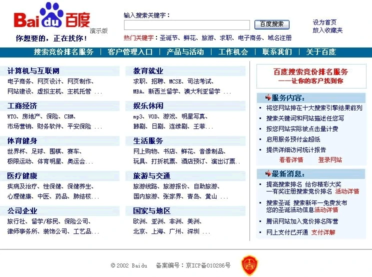
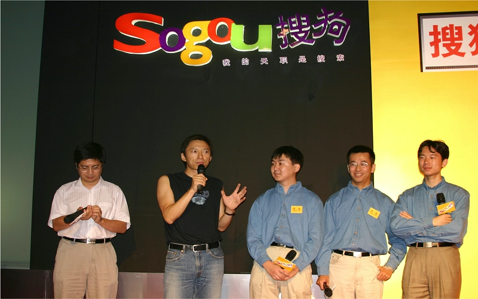

2000–2007: Popularization and Portals – The Internet Enters Every Household¶
In the early 2000s, Chinese tech companies, especially Alibaba, lay the foundations for the pervasive urban e-commerce environment that would emerge fifteen years later. They’re waiting for one thing: scale. State control is relatively light and lags innovation, although online monitoring and censorship are already underway.
2000年代初期，中国科技公司，尤其是阿里巴巴，为15年后出现的普遍城市电子商务环境奠定了基础。他们等待的是一件事：规模。国家控制相对较轻，落后于创新，尽管在线监控和审查制度已经在进行中。
January 2000 – Baidu is founded. China’s top search engine, and now a company with great AI ambitions.
2000 年 1 月 ——百度成立。中国顶级搜索引擎，现在是一家拥有巨大人工智能野心的公司。

On January 1, 2000, Administration Provisions on the Maintenance of Secrets in the International Networking of Computer Information Systems issued by State Secrets Bureau began to be put in force.
2000 年 1 月 1 日，《计算机信息系统国际联网保密管理办法》开始施行，该办法由国家保密局发布。
On January 17, 2000, the Ministry of Information Industry officially approved the establishment of China International Economy and Trade Net (CIETnet) by China International Electronic Commerce Center.
2000 年 1 月 17 日，中国电子商务中心正式获得信息产业部批准建立中国国际经济贸易网（CIETnet）。
On January 18, 2000, China Internet Network Information Center (CNNIC) issued the fifth Statistical Report on Internet Development in China: By December 31, 1999, there were 3,500,000 computers in total which had access to the Internet in China. There were about 8,900,000 Internet subscribers, 48695 domain names registered under CN, and about 15153 WWW websites. The international bandwidth was 351M.
2000 年 1 月 18 日，中国互联网络信息中心（CNNIC）发布了第五次中国互联网发展状况统计报告：截至 1999 年 12 月 31 日，中国共有 3,500,000 台计算机接入互联网。互联网用户约 8,900,000 人，CN 域名注册量达 48695 个，WWW 网站约 15153 个。国际带宽为 351M。
On January 18, 2000, China Internet Network Information Center (CNNIC) launched the pilot system for Chinese domain names with the approval of the Ministry of Information Industry.
2000 年 1 月 18 日，中国互联网络信息中心（CNNIC）获信息产业部批准，启动了中文域名试点系统。
On March 30, 2000, the country-level Internet exchange center was put into operation in Beijing, which increased the internetworking bandwidth of less than 10 MBPS to 100 MBPS for the major internetworks in China, speeding up the access speed.
2000 年 3 月 30 日，国家级互联网交换中心在北京投入运营，将中国主要互联网的互联带宽从不到 10 Mbps 提升至 100 Mbps，加快了接入速度。
On March 30, 2000, China Securities Regulatory Commission issued Interim Provisions for the Administration of Online Securities Entrustment.
2000 年 3 月 30 日，中国证监会发布《在线证券委托管理办法》。
On May 17, 2000, CMNET was put into operation. On the same day，China Mobile officially launched the "GoTone WAP (wireless application protocol) " service.
2000 年 5 月 17 日，中国电信网通正式开通。同一天，中国移动正式推出“GoTone WAP（无线应用协议）”服务。
On May 20, 2000, Chinese Domain Name Consortium (CDNC) was established in Beijing to coordinate and standardize the Chinese domain names in a nongovernmental way.
2000 年 5 月 20 日，中国域名联合会（CDNC）在北京成立，以非政府方式协调和规范中文域名。
On June 21, 2000, China Electronic Commerce Association was officially established. The association aimed at strengthening the exchange and cooperation between China and other countries in the world in e-business, facilitating the application and development of e-business in China, and facilitating the overall economic development in China.
2000 年 6 月 21 日，中国电子商务协会正式成立。该协会旨在加强中国与世界各国在电子商务领域的交流与合作，促进中国电子商务的应用与发展，推动中国整体经济发展。
On July 1, 2000, with the authorization by the State Council, State Development Planning Commission specified the website http://www.chinabidding.gov.cn as the only network medium to release the governmental bidding announcement.
2000 年 7 月 1 日，经国务院授权，国家发展计划委员会指定网站 http://www.chinabidding.gov.cn 为唯一发布政府招标公告的网络媒介。
On July 7, 2000, the Enterprise Online Project, which was jointly sponsored by China Telecommunications Corporation and Economic Information Center of State Economic and Trade Commission and under the guidance of State Economic and Trade Commission and the Ministry of Information Industry, was officially launched.
2000 年 7 月 7 日，由中国电信集团公司和国家经济贸易委员会经济信息中心联合主办，在国家经济贸易委员会和信息产业部指导下，企业在线项目正式启动。
On July 18, 2000, Researcher Qian Hualin from Computer Network Information Center of Chinese Academy of Sciences was elected Council Chairman of Asia Pacific Top Level Domain Association (APTLD) by a unanimous vote.
2000 年 7 月 18 日，中国科学院计算机网络信息中心的研究员钱华林以全票当选亚洲太平洋顶级域名协会（APTLD）理事会主席。
On July 19, 2000, UNINET of China Unicom was officially put into operation.
2000 年 7 月 19 日，中国联通的 UNINET 正式投入运营。
In July 2000, Doctor Gao Lulin, former director of State Intellectual Property Office, participated in the election for ICANN council members, and was nominated on August 1. However, the repeated errors of the ICANN database had prevented the Chinese netizens from applying for voting, which led to Doctor Gao's failure in the election.
2000 年 7 月，原国家知识产权局局长高卢麟博士参加了 ICANN 理事会成员的选举，并于 8 月 1 日被提名。然而，ICANN 数据库的重复错误阻止了中国网民申请投票，导致高卢麟博士在选举中失败。
On August 21, 2000, the 16th World Computer Congress was ceremoniously held at Beijing International Convention Center. President Jiang Zemin wrote an inscription for the congress and delivered an important speech at the opening ceremony. He advocated the formulation of the Internet convention in order to jointly strengthen the information security management and to give full play to the positive role of the Internet.
2000 年 8 月 21 日，第 16 届世界计算机大会在北京国际会议中心隆重举行。江泽民主席为大会题词并出席开幕式发表重要讲话。他倡导制定互联网公约，以共同加强信息安全管理，充分发挥互联网的积极作用。
On September 25, 2000, the State Council issued Regulation on Telecommunications of the People's Republic of China. This was the first comprehensive regulation in China that governed the telecommunication industry, indicating that the development of the telecommunication industry in China began to follow a legal track. On the same day，the State Council announced the implementation of Regulation on Internet Information Service of the People's Republic of China.
2000 年 9 月 25 日，国务院发布了《中华人民共和国电信条例》。这是中国第一部全面规范电信行业的法规，标志着中国电信行业的发展开始走上法治轨道。同一天，国务院宣布实施《中华人民共和国互联网信息服务管理办法》。
In September 2000, Tsinghua University built up the first new-generation Internet exchange center DRAGONTAP in China. Interconnection with the international new-generation academic networks such as Abilene, vBNS, CA*net3 was realized by a 10Mbps line that connected to the new-generation Internet exchange center STARTAP located in Chicago and a 10Mbps line that connected to the APAN exchange center located in Tokyo via DRAGONTAP，CERNET, CSTNET and NSFCNET.
2000 年 9 月，清华大学在中国建成了首个新一代互联网交换中心 DRAGONTAP。通过一条连接位于芝加哥的新一代互联网交换中心 STARTAP 的 10Mbps 线路，以及一条通过 DRAGONTAP、CERNET、CSTNET 和 NSFCNET 连接到位于东京的 APAN 交换中心的 10Mbps 线路，实现了与国际新一代学术网络如 Abilene、vBNS、CA*net3 的互联。
In September 2000, CERNIC, the information service center of CERNET, took the lead in providing the IPv6 address assignment services.
2000 年 9 月，中国教育科研网信息中心 CERNIC 率先提供 IPv6 地址分配服务。
On October 11, 2000, the Fifth Plenary Session of the 15th Central Committee of the Communist Party of China made critical decisions concerning the informatization construction. Suggestions of the CPC Central Committee on Formulating the Tenth Five-year Plan for National Economy and Social Development, which was deliberated on and adopted, had specifically pointed out: "Giving great impetus to informatization of the national economy and the society is a strategic move to cover the entire modernization construction. Informatization should be utilized to drive industrialization, and late-mover advantages should be brought into play to realize great-leap-forward development. "
2000 年 10 月 11 日，中共第十五届中央委员会第五次全体会议就信息化建设作出重大决策。经审议通过的《中共中央关于制定国民经济和社会发展第十个五年计划的建议》明确指出："大力推进国民经济和社会信息化，是覆盖现代化建设全局的战略举措。要发挥信息化对工业化带动作用，发挥后发优势，实现跨越式发展。"
On November 1, 2000, China Internet Network Information Center (CNNIC) issued Administrative Regulations on Registration of Chinese Domain Names (Trial) and Dispute Resolution for Chinese Domain Names (Trial), and entrusted China International Economic and Trade Arbitration Commission to set up the dispute resolution organization for Chinese domain names.
2000 年 11 月 1 日，中国互联网络信息中心（CNNIC）发布《中国域名注册管理办法（试行）》和《中国域名争议解决办法（试行）》，并委托中国国际经济贸易仲裁委员会设立中国域名争议解决办法组织。
On November 6, 2000, the State Council Information Office and the Ministry of Information Industry issued Tentative Provisions on the Administration of Engagement by Internet Sites in the Business of News Publication.
2000 年 11 月 6 日，国务院信息办公室和信息产业部发布了《互联网新闻信息服务单位从事新闻发布业务管理办法（试行）》
On November 6, 2000, the Ministry of Information Industry issued Provisions on Administration of Internet Electronic Messaging Services.
2000 年 11 月 6 日，信息产业部发布了《互联网电子信息服务管理办法》。
On November 7, 2000, the Ministry of Information Industry issued Notice on Administration of Chinese Domain Names of the Internet to standardize the registration service and management for the Chinese domain names in China, and to specifically authorize CNNIC to act as the registry of Chinese domain names.
2000 年 11 月 7 日，信息产业部发布《中国互联网域名注册管理暂行办法》，规范中国互联网域名的注册服务和管理工作，并具体授权中国互联网络信息中心（CNNIC）担任中国域名注册管理机构。
On November 7, 2000, the registration system for Chinese domain names of China Internet Network Information Center (CNNIC) was upgraded in an all-round way, and began to offer the Chinese domain name services with such suffixes as ".CN", ".中国", ".公司" and ".网络".
2000 年 11 月 7 日，中国互联网络信息中心（CNNIC）的中国域名注册系统全面升级，开始提供以“.CN”、“.中国”、“.公司”和“.网络”等后缀的中文域名服务。
On November 10, 2000, China Mobile launched the Monternet Plan to create an open, cooperative and win-win industrial value chain.
2000 年 11 月 10 日，中国移动推出“移动梦网”计划，旨在构建开放、合作、共赢的产业价值链。
On December 7, 2000, the Network Civilization Project, which was jointly sponsored by the Ministry of Culture, the Central Committee of the Communist Young League, the State Administration of Radio Film and Television, All-China Students Federation, National Informatization Promotion Office, Guangming Daily, China Telecom and China Mobile, was officially launched in Beijing. The theme of this project was "civilized surfing, civilized networking, civilized network".
2000 年 12 月 7 日，由文化部、共青团中央、国家广播电影电视总局、全国学联、国家信息化推进办公室、光明日报、中国电信和中国移动联合发起的“网络文明工程”在北京正式启动。该项目的主题为“文明上网、文明用网、文明办网”。
On December 12, 2000, such websites as people.com.cn, xinhuanet, china.com.cn, CCTV com, CRI Online, China Daily and China Youth International were approved by the State Council Information Office to publish news, becoming the first key news websites that had obtained the permit to publish news.
2000 年 12 月 12 日，人民网、新华网、中国网、央视网、中国国际广播电台在线、中国日报和中国青年网等网站被国务院新闻办公室批准发布新闻，成为首批获得新闻发布许可的重点新闻网站。
On December 28, 2000, the nineteenth session of the Standing Committee of the Ninth People's Congress voted through Decision of the Standing Committee of the People's Congress on Safeguarding the Internet Security.
2000 年 12 月 28 日，第九届全国人大常委会第十九次会议审议通过了《全国人大常委会关于维护互联网安全的决定》。
December 2000 – There are 22.5 million internet users in China.
2000 年 12 月 – 中国有 2250 万互联网用户。
In 2001, the China Internet Association was established, and Yao Jinbo founded Xueda and Chuangqi.¶
2001年，中国互联网协会成立、姚劲波创办学大、创奇。
On January 1, 2001, the internet-based School Link project entered the official implementation phase.
2001 年 1 月 1 日，基于互联网的校网项目进入正式实施阶段。
On January 11, 2001, State Drug Administration issued Tentative Provisions on Administration of Internet-based Pharmaceutical Information Services which came into force from February 1, 2001.
2001 年 1 月 11 日，国家药品监督管理局发布《互联网药品信息服务管理办法（试行）》，自 2001 年 2 月 1 日起施行。
On January 17, 2001, China Internet Network Information Center (CNNIC) issued the seventh Statistical Report on Internet Development in China: By December 31, 2000, there were about 8,920,000 computers in total which had access to the Internet in China. There were about 22,500,000 Internet subscribers, 122099 domain names registered under CN, and about 265405 WWW websites. The international bandwidth was 2799M.
2001 年 1 月 17 日，中国互联网络信息中心（CNNIC）发布了第七次中国互联网发展状况统计报告：截至 2000 年 12 月 31 日，中国共有约 892 万个接入互联网的计算机。互联网用户约 2250 万人，CN 域名注册量达 122099 个，WWW 网站约 265405 个。国际带宽为 2799M。
Early in February 2001, China Telecom began to provide the internet-based international roaming service.
2001 年 2 月初，中国电信开始提供基于互联网的国际漫游服务。
On March 2, 2001, Researcher Qian Hualin and Professor Li Xing from Tsinghua University were elected members of the new Executive Committee of APNIC.
2001 年 3 月 2 日，清华大学的研究员钱华林和教授李兴当选为 APNIC 新执行委员会成员。
On April 3, 2001, the Ministry of Information Industry, the Ministry of Public Security, the Ministry of Culture and State Administration for Industry & Commerce of the People's Republic of China jointly issued Measures on the Administration of Business Sites of Internet Access Services which came into force from the date of issuance.
2001 年 4 月 3 日，信息产业部、公安部、文化部和中华人民共和国国家工商行政管理总局联合发布《互联网接入服务营业场所管理办法》，自发布之日起施行。
On April 13, 2001, the Ministry of Information Industry, the Ministry of Public Security, the Ministry of Culture and State Administration for Industry & Commerce of the People's Republic of China deployed and carried out the special-purpose rectifications against "Internet bars".
2001 年 4 月 13 日，中华人民共和国信息产业部、公安部、文化部和国家工商行政管理总局联合部署并开展了针对“网吧”的专项整治行动。
In April, 2001, Professor Li Xing from Tsinghua University was elected the new chairman of APNG in the chairman election for the new Executive Committee of APNG.
2001 年 4 月，清华大学李兴教授在 APNG 新执行委员会主席选举中被选为新一届 APNG 主席。
In May 2001, the China Internet Association was established. This national non-profit organization, initiated by Chinese enterprises and institutions engaged in the internet industry and related sectors, marked the beginning of a new chapter in the self-management and self-service of China's internet industry.In the same year, Li Rubin, Jin Xin, and Yao Jinbo started with a tutoring agency and founded Xueda Education, becoming known as the "Three Gentlemen of Xueda." Nine years later, they successfully brought the company to the New York Stock Exchange.
2001年，5月，中国互联网协会成立。这家由中国从事互联网业及互联网相关产业的企事业单位和社会各界发起设立的全国非盈利性社会团体，标志着中国互联网的行业自我管理、自我服务揭开了新篇章。同年，李如彬、金鑫、姚劲波以家教中介起步，创立了学大教育，三人并称为“学大三君子”。9年之后，他们一起将公司送上了纽交所。
In May 2001, China Information Technology Security Evaluation Center was founded with the approval of State Commission Office for Public Sector Reform. It was responsible for conducting the national evaluation on the information security products, information system security, information security services and information security professionals.
2001 年 5 月，经国家体制改革委员会批准，中国信息技术安全评测中心成立。该中心负责对信息安全产品、信息系统安全、信息安全服务以及信息安全专业人员进行国家级评测。
On June 1, 2001, the Port Electronic Enforcement System, which was jointly developed by 12 relevant ministries and commissions with General Administration of Customs taking the lead, and which was called "Electronic Port", was put into full operation in each port of China after its pilot operation in the import-export ports in Beijing, Tianjin, Shanghai and Guangzhou.
2001 年 6 月 1 日，由 12 个相关部委联合开发、海关总署牵头，并在北京、天津、上海、广州等进出口港口进行试点运行后，名为“电子口岸”的港口电子执法系统在全国各港口全面投入运行。
In July 2001, the important joint project of National Natural Science Fund NSFCNET (1999-2000), which was jointly undertaken by Tsinghua University, Computer Network Information Center of Chinese Academy of Sciences, Peking University, Beijing University of Posts and Telecommunications, Beijing University of Aeronautics and Astronautics, etc., passed the appraisal and acceptance and became the first next-generation internet-based academic research network in China. The research focused on the fiber optic transmission system of the density wave division multiplexing, high-speed computer internetwork，important application research and demonstration system in the high-speed network environment.
2001 年 7 月，由清华大学、中国科学院计算网络信息中心、北京大学、北京邮电大学、北京航空航天大学等共同承担的重要联合项目——国家自然科学基金项目 NSFCNET（1999-2000），通过了评审验收，成为中国首个基于下一代互联网的学术研究网络。该研究聚焦于密集波分复用光纤传输系统、高速计算机互联网、高速网络环境下的重要应用研究及示范系统。
On July 9, 2001, the People's Bank of China issued Tentative Procedures on Administration of Online Banking Services.
2001 年 7 月 9 日，中国人民银行发布了《网上银行业务管理暂行办法》。
On July 11, 2001, the Central Committee of the Communist Party of China held the lecture on the rule of law at Huairen Hall in Zhongnanhai, which focused on the use of legal means to guarantee and facilitate the healthy development of information network. Jiang Zemin, General Secretary of the Communist Party of China, chaired the lecture and delivered an important speech. Jiang Zemin pointed out that we should seize opportunities, speed up the development of information technologies and network technologies in China, and actively apply them in such aspects as economy, society, technology, national defense, education, culture and law. He also said that we should not only actively facilitate the development of the information network infrastructure, but also put efforts to strengthen management in order to develop the information network rapidly and healthily.
2001 年 7 月 11 日，中国共产党中央委员会在中南海怀仁堂举行法治讲座，重点阐述了运用法律手段保障和促进信息网络健康发展的相关问题。中共中央总书记江泽民主持了讲座并发表重要讲话。江泽民指出，我们要抓住机遇，加快中国信息技术和网络技术的发展，并积极应用于经济、社会、科技、国防、教育、文化、法律等各个方面。他还强调，不仅要积极促进信息网络基础设施建设的发展，还要努力加强管理，以实现信息网络的快速和健康发展。
On July 29, 2001, the Ministry of Information Industry announced the indicator composition plan for national informatization as the basis and means for the quantitative analysis and management of the national and regional informatization level.
2001 年 7 月 29 日，信息产业部发布《国家信息化指标体系构成方案》，将其作为对国家及地区信息化水平进行定量分析和管理的依据。
In July 2001, Informatization-specific Planning in the Tenth Five-year Plan of the National Economy and Social Development was formulated.
2001 年 7 月，《国民经济和社会发展第十个五年计划信息化专项规划》制定。
On August 23, National Information Work Leading Group was rebuilt, and Premier Zhu Rongji, member of the Standing Committee of the Political Bureau of the CPC Central Committee, acted as the group leader.
2001 年 8 月 23 日，国家信息化领导小组重建，时任中共中央政治局常委朱镕基担任组长。
In August 2001, National Computer Network and Information Center set up “China Emergency Treatment and Coordination Center for Computer Network" (CNCERT/CC).
2001 年 8 月，国家计算机网络应急技术处理协调中心（CNCERT/CC）成立。
On September 7, 2001, Outline of the Tenth Five-year Plan of IT Industry was officially issued. This was the first sector planning after the State determined the important strategy on informatization.
2001 年 9 月 7 日，《信息产业第十个五年规划纲要》正式发布。这是国家确定信息化重大战略后的首个行业规划。
On September 7, 2001, National Informatization Promotion Office issued Survey Report on Quantity of Information Resources of Internetworks in China. This survey was jointly carried out by China Internet Network Information Center (CNNIC), China Center of Information Industry Development and Nanjing Research Base of National Information Resource Management under the authorization of National Informatization Promotion Office. This was China's first survey on the network information resources. The result showed that by April 30, 2001, there were totally 692,490 domain names of internetworks, 238,249 websites, 159,460,056 web pages and 45,598 online databases in China.
2001 年 9 月 7 日，国家信息化推进工作办公室发布了《中国互联网络信息资源数量调查报告》。该调查由国家互联网信息中心（CNNIC）、中国信息产业开发中心及国家信息资源管理南京研究基地在国家信息化推进工作办公室的授权下联合开展。这是中国首次对网络信息资源进行的调查。结果显示，截至 2001 年 4 月 30 日，中国共有 692,490 个互联网域名、238,249 个网站、159,460,056 个网页和 45,598 个在线数据库。
On September 20, 2001, the Ministry of Information Industry issued Interconnected Settlement Method for Backbone Networks of the Internet.
2001 年 9 月 20 日，信息产业部发布了《互联网骨干网互联结算办法》。
On September 29, 2001, the Ministry of Information Industry issued Temporary Provisions on Interconnection Services among Backbone Networks of the Internet.
2001 年 9 月 29 日，信息产业部发布了《互联网骨干网间互联服务暂行办法》。
On October 8, 2001, the Ministry of Information Industry issued Temporary Provisions on Administration of Interconnection among Backbone Networks of the Internet.
2001 年 10 月 8 日，信息产业部发布了《互联网骨干网间互联管理暂行办法》。
On October 27, 2001, the Right to Network Dissemination was officially included in the revised Copyright Law of the People's Republic of China which was approved and adopted by the twenty-fourth session of the Standing Committee of the Ninth People's Congress. Relevant new provisions have provided laws for the copyright protection in the network transmission environment.
2001 年 10 月 27 日，《中华人民共和国著作权法》修订案经第九届全国人大常委会第二十四次会议审议通过，正式将网络传播权纳入其中。相关新规定为网络传输环境中的著作权保护提供了法律依据。
On November 4, 2001, China Internet Network Information Center (CNNIC) offered the Internet Keyword service.
2001 年 11 月 4 日，中国互联网络信息中心（CNNIC）推出了互联网关键词服务
On November 20, 2001, Demonstration Project of Electronic Government Affair Application in China passed the evaluation, indicating that China had taken an important step towards "electronic government".
2001 年 11 月 20 日，中国政务电子化应用示范项目通过评估，标志着中国向“电子政府”迈出了重要一步。
On November 22, 2001, the Central Committee of the Communist Young League, the Ministry of Education, the Ministry of Culture, the State Council Information Office, All-China Youth Federation, All-China Students Federation, China Young Pioneers Working Commission, and China Youth Association for Internet Development officially issued All-China Youth Network Civilization Convention. From then on, hundreds of millions youngsters and teenagers nationwide had their own ethical code of conduct.
2001 年 11 月 22 日，共青团中央、教育部、文化部、国务院信息办公室、中国青少年发展基金会、中国学生联合会、中国少年先锋队工作委员会和中国互联网发展基金会联合正式发布《全国青少年网络文明公约》。从此，全国数以亿计的青少年和儿童有了自己的行为道德规范。
In November, 2001, Academician Hu Qiheng, Vice-chairman of China Association for Science and Technology and Chairman of CNNIC Working Committee, was appointed as the member of the Multilingual Domain Name Committee of ICANN.
2001 年 11 月，中国科协副主席、中国互联网信息中心工作委员会主任、院士胡启恒被任命为 ICANN 多语种域名委员会成员。
In November, SNDA's online game mir2 was launched. This game was introduced by Chen Tianqiao, who secured exclusive distribution rights from the Korean Actoz company for $300,000. At the time, SNDA's funds were only enough to purchase the mir2 copyright, with no money left even for renting servers. mir2 was a role-playing game, where players invested significant time and money, creating strong user engagement. Shengda earned substantial profits. Within a month, the number of simultaneous users of mir2 quickly surpassed 400,000, and Shengda had recouped all its investment. In 2002, SNDA’s revenue and net profit reached 326 million yuan and 139 million yuan, respectively. In 2003, both revenue and net profit nearly doubled compared to the previous year, reaching 633 million yuan and 273 million yuan, respectively. At this time, SNDA had only about 100 employees, but mir2 was generating over 1 million yuan in daily revenue. Chen Tianqiao was so excited that he sometimes woke up from his dreams.
11月，盛大网络游戏《传奇》上线。这是一款陈天桥从韩国Actoz公司引进，以30万美金获得独家代理权的游戏。当时盛大所有的资金只够用来购买传奇的版权，连租服务器的钱都没有。《传奇》是一种扮演类游戏，玩家花时间、金钱投入其中，用户黏性非常强，盛大也赚得盆满钵满。一个月后，《传奇》同时在线的人数迅速突破40万，盛大的投资全部收回。2002年，盛大收入和净利润达到3.26亿元和1.39亿元；2003年收入和净利润均较上年翻了近1倍，分别达6.33亿元和2.73亿元。此时盛大的员工只有100人左右，但《传奇》每天带来的收入已经突破100万元，陈天桥兴奋地有时会从梦中惊醒。
On December 3, 2001, China Internet Network Information Center (CNNIC) issued Survey Report on Internet Bandwidth in China for the first time. By September 30, 2001, the international bandwidth of China reached 5724M.
2001 年 12 月 3 日，中国互联网络信息中心（CNNIC）首次发布了《中国互联网带宽调查报告》。截至 2001 年 9 月 30 日，中国的国际带宽达到 5724M。
On December 20, 2001, the Family Online Project, which was jointly sponsored by the Ministry of Information Industry, All-China Women's Federation, the Central Committee of the Communist Young League, the Ministry of Science and Technology and the Ministry of Culture, was officially launched.
2001 年 12 月 20 日，由信息产业部、全国妇联、共青团中央、科技部和文化部联合主办的家庭在线项目正式启动。
On December 20, 2001, Telecommunication Administration Bureau of the Ministry of Information Industry issued Settlement Regulations of National Internet Exchange Center.
2001 年 12 月 20 日，信息产业部电信管理局发布了《国家互联网交换中心结算办法》。
On December 20, 2001, the ten major internetworks in China signed the interconnection and intercommunication agreement, which meant that from then on, the Chinese netizens might surf the Internet trans-regionally in a more convenient and smoother way.
2001 年 12 月 20 日，中国十大互联网络签署了互联互通协议，这意味着从那时起，中国网民可以更方便、更顺畅地跨区域上网。
On December 22, 2001, China Unicom declared in Beijing that the first-stage construction of the CDMA mobile communication network of China Unicom had been completed as scheduled, and that such network would be put into operation in 31 provinces, autonomous regions and municipalities directly under the central authority nationwide on December 31, 2001. The building-up of the CDMA network of China Unicom indicated that the development of the mobile communication technology of China had entered a new field.
2001 年 12 月 22 日，中国联通在北京宣布，中国联通 CDMA 移动通信网络的第一阶段建设已按计划完成，该网络将于 2001 年 12 月 31 日在全国 31 个省、自治区和直辖市投入运营。中国联通 CDMA 网络的建设表明，中国移动通信技术的发展进入了一个新领域。
On December 25, 2001, Zhu Rongji, member of the Standing Committee of the Political Bureau of the CPC Central Committee, Premier of the State Council and leader of National Information Work Leading Group, chaired and held the first meeting of National Information Work Leading Group. He pointed out that the informatization construction in China should be solidly put forward by attaching importance to it, strengthening the planning and coordination of it, adhering to the market orientation and avoiding duplicate construction.
2001 年 12 月 25 日，中共中央政治局常委、国务院总理、国家信息化领导小组组长朱镕基主持召开了国家信息化领导小组第一次会议。他指出，中国的信息化建设要切实推进，要重视它，加强规划和协调，坚持市场导向，避免重复建设。
At the end of December 2001, the construction project of the high-speed backbone network of China Education and Research Network (CERNET) (1999-2001) passed the national acceptance check. The project was an important part of the Modern Remote Education Project in the "Action Plan for Educational Vitalization Facing the 21st Century", and was the important foundation to construct a life-long education system in China. The project had built up a high-speed transmission network based on DWDM / SDH, with a capacity of up to 40Gbps. The backbone network had a transmission rate of up to 2.5Gbps, and connected to 35 provincial capitals and key cities, except for Lhasa, at a rate of 155Mbps. About one hundred colleges and universities accessed the network at 100 ~ 1000Mbps. On this basis, the Ministry of Education had approved 47 (which was expanded to 67 later) colleges and universities to set up the network education faculties, and approved 19 online cooperation research centers to carry out remote education and collaborative research on CERNET.
2001 年 12 月底，中国教育和科研计算机网（CERNET）（1999-2001）高速骨干网建设项目通过了国家验收。该项目是“面向 21 世纪教育振兴行动计划”中现代远程教育工程的重要组成部分，是中国构建终身教育体系的重要基础。该项目建成基于 DWDM/SDH 的高速传输网络，容量高达 40Gbps。骨干网的传输速率高达 2.5Gbps，除拉萨外，连接了 35 个省会城市和重点城市，传输速率为 155Mbps。约一百所高校接入网络，速率在 100~1000Mbps 之间。在此基础上，教育部批准了 47 所（后扩展至 67 所）高校设立网络教育学院，并批准了 19 个在线合作研究中心，在 CERNET 上开展远程教育和合作研究。
On December 31, 2001, the country-level Internet exchange centers in Shanghai and Guangdong were put into official operation.
2001 年 12 月 31 日，上海和广东的国家级互联网交换中心正式投入运营。
In 2002, Blogcn was founded, marking the rise of personal portals and the entry of internet portals into the Web 2.0 era.¶
2002年，博客网成立，个人门户兴起，互联网门户进入2.0时代。
On January 15, 2002, China Internet Network Information Center (CNNIC) issued the ninth Statistical Report on Internet Development in China: By December 31, 2001, there were about 12,540,000 computers in total which had access to the Internet in China. There were about 33,700,000 Internet subscribers, 127,319 domain names registered under CN, and about 277,100 WWW websites. The international bandwidth was 7597.5M.
2002 年 1 月 15 日，中国互联网络信息中心（CNNIC）发布了第九次中国互联网发展状况统计报告：截至 2001 年 12 月 31 日，中国共有约 1254 万台接入互联网的计算机。互联网用户数约为 3370 万，CN 域名注册量达 127319 个，WWW 网站数量约为 277100 个。国际带宽为 7597.5M。
On March 14, 2002, the ninth ministry affairs meeting of the Ministry of Information Industry approved and adopted Measures for the Administration of Internet Domain Names of China which was put in force from September 30, 2002.
2002 年 3 月 14 日，信息产业第九次部务会议审议通过了《中国互联网域名管理办法》，该办法自 2002 年 9 月 30 日起施行。
On March 26, 2002, Internet Society of China issued Self-regulation Convention for Internet Industry in China in Beijing, which provided guarantee for the establishment of the self-regulation mechanism for the Internet industry in China.
2002 年 3 月 26 日，中国互联网协会在北京发布《中国互联网行业自律公约》，为中国互联网行业自律机制的建立提供了保障。
On May 17, 2002, the Ministry of Culture issued Notice on Strengthening Management of Network Culture Market.
2002 年 5 月 17 日，文化部发布《关于加强网络文化市场管理的通知》。
On May 17, 2002, China Telecom launched the VNET plan in Guangzhou, indicating that ISP and ICP began to jointly build up a broadband Internet industry chain.
2002 年 5 月 17 日，中国电信在广州推出 VNET 计划，表明 ISP 和 ICP 开始共同构建宽带互联网产业链。
On May 17, 2002, China Mobile took the lead in officially launching the GPRS service nationwide. On November 18, China Mobile and AT&T Wireless jointly declared that their GPRS international roaming service was officially put into operation.
2002 年 5 月 17 日，中国移动率先在全国正式推出 GPRS 服务。11 月 18 日，中国移动与 AT&T Wireless 联合宣布，其 GPRS 国际漫游服务正式投入运营。
On June 27, 2002, General Administration of Press and Publication and the Ministry of Information Industry jointly formulated Tentative Provisions on Administration of Internet Publishing which would be officially implemented from August 1, 2002.
2002 年 6 月 27 日，国家新闻出版署与信息产业部联合制定了《互联网出版管理暂行规定》，该规定自 2002 年 8 月 1 日起正式施行。
On July 3, 2002, the second meeting of National Information Work Leading Group was held. The meeting approved and adopted Informatization-specific Plan in the Tenth Five-year Plan of the National Economy and Social Development, Instructions on Construction of Electronic Government Affairs in China, and Action Framework for Revitalizing the Software Industry.
2002 年 7 月 3 日，国家信息化工作领导小组召开第二次会议。会议审议通过了《国民经济和社会发展第十个五年计划信息化专项规划》、《中国政府电子政务建设指南》和《振兴软件产业行动纲要》。
In August 2002, Fang Xingdong founded the predecessor of Blogcn (later known as BlogChina). Within three years, the website consistently achieved over 30% monthly growth, and its global ranking soared to over 60th place. In 2004 and 2005, it raised millions of dollars, sparking a Web 2.0 investment boom in China. Subsequently, any VC active in China at the time who was unfamiliar with terms like Blog, Podcast, RSS, or P2P, or who ignored projects like blogs, podcasts, videos, and social networking, was considered outdated.Later, "Blog China" was rebranded as "Blog.cn," with the goal of becoming a blog-style portal, claiming to be the "world's largest Chinese blog site." However, the millions in funding were quickly squandered. This marked the beginning of a period of intense personnel upheaval at Blog.cn, with almost the entire senior management team leaving. Fang Xingdong's role as CEO was replaced by a decision-making group. By the end of 2006, Blog.cn's staff had been reduced to just over 40 people, a far cry from the number at the time of the initial investment. It was a tragic fall from being a Web 2.0 pioneer to becoming a forgotten entity.
2002年8月，方兴东创建博客网的前身(博客中国)，之后3年内网站始终保持每月超过30%的增长，全球排名一度飙升到60多位。并于2004年、2005年融资千万美元，并引发了中国Web2.0的投资热潮。其后活跃在中国的VC要是不知道Blog、Podcast、RSS、P2P等术语，不看博客、播客、视频、交友等项目就是落伍的标志。历史只不过在换一种方式重演，昨天的web2.0，今天的web3.0，明天的web4.0。风吹网面，雁过长空。随后，“博客中国”更名为“博客网”，并宣称要做博客式门户，号称“全球最大中文博客网站”，而后千万美元很快就被挥霍殆尽。博客网至此拉开了持续3年的人事剧烈动荡，高层几乎整体流失，而方兴东本人的CEO职务也被一个决策小组取代。到2006年年底，博客网的员工已经缩减恢复到融资当初的40多个人。从引领Web2.0的先驱成为无人问津的弃儿，可惜至极。
On September 25, 2002, China Internet Network Information Center (CNNIC) issued Implementing Rules on Registration of Domain Names, Dispute Resolution for Domain Names, Certification Method for Registration Authorities of Domain Names, and other files.
2002 年 9 月 25 日，中国互联网络信息中心（CNNIC）发布《域名注册管理规则》、《域名争议解决办法》、《域名注册机构认证办法》等文件。
On September 29, 2002, Premier Zhu Rongji signed and issued No. 363 Decree of the State Council of the People's Republic of China to promulgate Measures on the Administration of Business Sites of Internet Access Services which was put in force from November 15, 2002.
2002 年 9 月 29 日，朱镕基总理签署发布《中华人民共和国国务院令》第 363 号，公布《互联网接入服务业务经营管理办法》，自 2002 年 11 月 15 日起施行。
On September 30, 2002, Measures for the Administration of Internet Domain Names of China came into force.
2002 年 9 月 30 日，《中国互联网域名管理办法》正式施行。
From October 26 to 31, 2002, Internet Corporation for Assigned Names and Numbers (ICANN), a global registry of Internet addresses and domain names, held a conference in Shanghai. This was the first time that the ICANN conference was held in China. This conference was jointly hosted by China Internet Network Information Center (CNNIC) and Internet Society of China (ISC).
2002 年 10 月 26 日至 31 日，负责全球互联网地址和域名注册的互联网名称与数字地址分配机构（ICANN）在上海举行会议。这是 ICANN 会议首次在中国举办。此次会议由中国互联网网络信息中心（CNNIC）和中国互联网协会（ISC）联合主办。
On November 1, 2002, jointly sponsored by Internet Society of China, 263 Network Group and Sina.com, Anti-Spam Coordination Team of Internet Society of China was founded in Beijing. This action aimed at protecting the legitimate interests of the Internet users and electronic mail service providers in China, ensuring the fair use of the Internet resources and standardizing the service order of electronic mails in China.
2002 年 11 月 1 日，在中国互联网协会、263 网络集团和新浪网的联合赞助下，中国互联网协会反垃圾邮件协调小组在北京成立。此举旨在保护中国互联网用户和电子邮件服务提供商的合法权益，确保互联网资源的公平使用，规范中国电子邮件的服务秩序。
On November 22, 2002, the Ministry of Information Industry promulgated Announcement on the Domain Name System of the Internet in China.
2002 年 11 月 22 日，信息产业部发布了《中国互联网域名系统公告》。
On November 25, 2002, the First China Internet Conference and Exhibition, which was approved by the Ministry of Information Industry and sponsored by Internet Society of China, was held in Shanghai. The fundamental purpose of this meeting was to discuss how to make innovations in the application of China's Internet, and to guide the further development of the Internet in China. The theme of this conference was "Application of the Internet--Call for Innovations".
2002 年 11 月 25 日，经信息产业部批准、中国互联网协会主办的第一届中国互联网大会暨博览会在上海举行。这次会议的根本目的是讨论如何推动中国互联网应用的创新，并引导中国互联网的进一步发展。本次大会的主题是“互联网应用——创新呼唤”。
On December 16, 2002, China Internet Network Information Center (CNNIC), as the domain name registry, no longer accepted users' application for domain name registration. The domain name service provider, instead, would provide such service. This was another important change in the service system for domain name registration since the CN domain name was established in 1990 in China.
2002 年 12 月 16 日，作为中国域名注册机构的中国互联网络信息中心（CNNIC）不再接受用户的域名注册申请。域名服务机构则提供此类服务。这是自 1990 年中国 CN 域名建立以来，域名注册服务体系发生的又一重要变化。
By the end of 2002, the number of online game users in China had reached 8.074 million, with 4.013 million paying users, accounting for approximately 50% of the total. The online gaming market size had reached 910 million RMB. By 2020, the number of online game users in China had reached 518 million, with mobile game users totaling 516 million, and the market size had grown to 278.69 billion RMB.
2002年底，我国网络游戏用户数已达807.4万，其中付费用户达401.3万，占到了总数的约50％。网络游戏市场规模达到9.1亿元人民币。到2020年，我国网络游戏用户规模达到5.18亿人，移动游戏用户规模为5.16亿人，市场规模达到2786.9亿元。
In 2003, Taobao and Alipay were launched, and Dianping was founded.¶
2003年，淘宝网+支付宝诞生、大众点评成立。
On January 16, 2003, China Internet Network Information Center (CNNIC) issued the eleventh Statistical Report on Internet Development in China: By December 31, 2002, there were about 20,830,000 computers in total which had access to the Internet in China. There were about 59,100,000 Internet subscribers, 179,000 domain names registered under CN, and about 371,000 WWW websites. The international bandwidth was 9380M.
2003 年 1 月 16 日，中国互联网络信息中心（CNNIC）发布了第 11 份《中国互联网发展状况统计报告》：截至 2002 年 12 月 31 日，中国共有约 2083 万台接入互联网的计算机。互联网用户约 5910 万人，CN 域名下注册的域名约 179 万个，WWW 网站约 371 万个。国际带宽为 9380M。
On March 17, 2003, registration of second-level domains under the national top level domain was officially approved in China, and users might register second-level domains directly under the top level domain CN. This was a significant change since the domain name system was established in China.
2003 年 3 月 17 日，中国正式批准了在国家顶级域名下注册二级域名的申请，用户可以直接在顶级域名 CN 下注册二级域名。这是自中国域名系统建立以来的一项重大变革。
On March 20, 2003, Sun Zhigang, a young man from Hubei Province, was detained and beaten to death in Guangzhou. After this incident was first exposed by the local newspaper, the major network media in China intervened actively, and wide attention was drawn from the society. The Internet brought into play its powerful role in media supervision and urged relevant departments to solve this case. On June 20, the State Council issued Administrative Regulations on Helping Tramps and Beggars in Cities, and annulled Regulations on Sheltering and Sending Back Tramps and Beggars in Cities simultaneously. The influence and position of network media increased gradually.
2003 年 3 月 20 日，湖北省青年孙志刚在广州被拘留并殴打致死。此事经当地报纸首次曝光后，中国各大网络媒体积极介入，社会各界广泛关注。互联网发挥了其强大的媒体监督作用，促使相关部门解决此案。6 月 20 日，国务院发布《城市生活无着的流浪乞讨人员救助管理办法》，同时废止《城市流浪乞讨人员收容遣送办法》。网络媒体的影响力和地位逐渐提升。
In April 2003, Dianping.com was established in Shanghai. Dianping.com is China’s leading local life consumption platform and one of the world’s earliest independent third-party consumer review websites. It provides merchant information, consumer discounts, and an interactive platform for posting consumer reviews across various sectors, including dining, shopping, leisure, entertainment, and life services. At the same time, it offers small and medium-sized businesses one-stop precision marketing solutions, including electronic coupons, keyword promotions, and group buying.
2003年4月大众点评网在上海成立。大众点评网是中国领先的本地生活消费平台、全球最早建立的独立第三方消费点评网站。大众点评网可提供餐饮、购物、休闲娱乐及生活服务等领域的商户信息、消费优惠以及发布消费评价的互动平台，同时，为中小商户提供一站式精准营销解决方案，包括电子优惠券、关键词推广、团购等。
On April 9, 2003, China Netcom Group announced the split of CHINANET between China Netcom Group and China Telecom Group in Beijing, and ceremoniously launched its new service "Broadband in China CHINA169".
2003 年 4 月 9 日，中国网通集团在北京宣布中国网通与中国电信两大集团之间的中国电信网分离，并隆重推出新服务“宽带中国 CHINA169”。
May 2003 – Alibaba launches Taobao, bringing everyday online shopping to consumers and connecting small shops to a broader market. Alibaba, with its intense focus on China’s specific needs, out-competes eBay, which eventually leaves the Chinese market.
2003 年 5 月 – 阿里巴巴推出淘宝，为消费者带来日常网上购物，并将小商店连接到更广阔的市场。阿里巴巴非常关注中国的具体需求，在竞争中击败了 eBay，最终离开了中国市场。
On May 10, 2003, the Ministry of Culture issued Interim Provisions on the Administration of Internet Culture which was put in force from July 1,, 2003.
2003 年 5 月 10 日，文化部发布《互联网文化管理暂行规定》，自 2003 年 7 月 1 日起施行。
On June 5, 2003, the Ministry of Culture issued Announcement on Examination and Approval of Chain Operation Units That Provide Internet Services Nationwide, and approved 10 units to set up the nationwide chain operation business locations that provide the Internet services.
2003 年 6 月 5 日，文化部发布《关于审批全国性互联网服务连锁经营单位的公告》，批准了 10 家单位设立全国性互联网服务连锁经营场所。
On June 26, 2003, Qian Hualin, an expert in computer network and data communication in China and researcher from Chinese Academy of Sciences, was elected council member of ICANN, with a term of office of three years. This was the first time for a Chinese expert to have entered the management team of the top decision-making organization for global Internet address and domain name resources.
2003 年 6 月 26 日，中国计算机网络与数据通信专家、中国科学院研究员钱华林当选 ICANN 理事会成员，任期为三年。这是中国专家首次进入全球互联网地址和域名资源顶级决策机构的管理团队。
On July 9, 2003, the Information Work Leading Group Office of the State Council issued 2002 Survey Report on Quantity of Information Resources of Internetworks in China in Beijing. By December 31, 2002, there were totally 940,300 domain names, 371,600 websites, 157,000,000 web pages and 82,900 online databases in China.
2003 年 7 月 9 日，国务院信息工作领导小组办公室在北京发布了《2002 年中国互联网信息资源数量调查报告》。截至 2002 年 12 月 31 日，中国共有 940,300 个域名、371,600 个网站、157,000,000 个网页和 82,900 个在线数据库。
On August 8, 2003, the first Report on the Internet Development in China jointly prepared by Internet Society of China and China Internet Network Information Center was officially published in Beijing. It was the first large-scale comprehensive document that reflected the Internet development in China completely since the Internet entered China in 1994.
2003 年 8 月 8 日，中国互联网协会和中国互联网网络信息中心联合编制的《中国互联网发展报告》在北京正式发布。这是自 1994 年中国接入互联网以来，首次全面反映中国互联网发展的综合性大型文件。
On August 8, 2003, Anti-Spam Coordination Team of Internet Society of China publicized "List of Spam Mail Servers" (First Batch) to the public, which drew much attention from all circles of the society.
2003 年 8 月 8 日，中国互联网协会反垃圾邮件协调组向公众公布了《垃圾邮件服务器名单》（第一批），引起了社会各界的高度关注。
On August 11, 2003, a computer worm virus called "WORM_MSBlast.A" was transmitted from foreign countries into China, and affected the users in the vast majority of regions in China within just several days. The virus renewed the historical virus record, and became one of the most influential viruses in the history of virus. Relevant national authorities took effective measures to control the spread of the virus, and media made relevant reports on this.
2003 年 8 月 11 日，一种名为"WORM_MSBlast.A"的电脑蠕虫病毒从国外传入中国，几天内就影响了中国绝大多数地区的用户。该病毒刷新了历史病毒记录，成为病毒历史上最具影响力的病毒之一。相关国家主管部门采取了有效措施控制病毒的传播，媒体也对此进行了相关报道。
In August 2003, Li Hongchen, an online game player, filed a law suit with Chaoyang District People's Court against Beijing Arctic Ice Technology Development Co., Ltd, the operator of the online game Red Moon. This was the first case in China where a game player filed a law suit against a game company due to the loss of virtual equipment. This case had legally aroused the issue of defining the virtual property online.
2003 年 8 月，网络游戏玩家李红晨向朝阳区人民法院起诉了运营网络游戏《红月》的北京北极冰科技有限公司。这是中国首例因虚拟装备损失而玩家起诉游戏公司的案件。此案在法律上引发了关于界定网络游戏虚拟财产的问题。
In August, 2003, the State Council officially approved the launch of the project of China Next Generation Internet（CNGI）. CNGI was the commencement project in the implementation of the next-generation Internet development strategy in China. It was in the charge of National Development and Reform Commission, coordinated technically by Chinese Academy of Engineering, and jointly led by National Development and Reform Commission, Ministry of Science and Technology, Ministry of Information Industry, Information Work Leading Group Office of the State Council, Ministry of Education, Chinese Academy of Sciences, Chinese Academy of Engineering and National Natural Science Foundation of China.
2003 年 8 月，国务院正式批准启动中国下一代互联网（CNGI）项目。CNGI 是中国下一代互联网发展战略实施中的启动项目。该项目由国家发展和改革委员会负责，技术协调由中国工程院承担，由国家发展和改革委员会、科学技术部、信息产业部、国务院信息工作领导小组办公室、教育部、中国科学院、中国工程院和中国国家自然科学基金委员会共同领导。
On September 27, 2003, Asia-Pacific Internet Research Alliance (APIRA) was founded in Beijing. This organization was initiated by China Internet Network Information Center (CNNIC), and its first members included Korean Internet Information Center (KRNIC), City University of Hong Kong, University of Macau and Taiwan Network Information Center (TWNIC).
2003 年 9 月 27 日，亚太互联网研究联盟（APIRA）在北京成立。该组织由中国互联网网络信息中心（CNNIC）发起，其首批成员包括韩国互联网信息中心（KRNIC）、香港城市大学、澳门大学和台湾网络信息中心（TWNIC）。
On November 18, 2003, State Sport General Administration officially approved e-sports to be the 99th official sports in China.
2003 年 11 月 18 日，国家体育总局正式批准电子竞技为中国第 99 项正式体育项目。
On November 20, 2003, China Internet Network Information Center (CNNIC) issued Survey Report on Hot Spots of Internet in China. This survey report covered two parts: short messages of websites and broadband. This was CNNIC or even the State's first time to have issued the survey report on relevant contents. The report showed that the users of short message services of websites used websites to send 10.9 short messages on average every week, and that 70.8% of the broadband users accessed the Internet via ADSL.
2003 年 11 月 20 日，中国互联网络信息中心（CNNIC）发布了《中国互联网热点调查报告》。这份调查报告分为两个部分：网站短信和宽带。这是 CNNIC 甚至国家首次发布关于相关内容的调查报告。报告显示，网站短信服务的用户平均每周使用网站发送 10.9 条短信，而 70.8%的宽带用户通过 ADSL 接入互联网。
On December 6-7, 2003, the second China Internet Conference was held in Beijing, with the theme of "Perspective Internet towards an E Era". Comrade Huang Ju, member of the Standing Committee of the Political Bureau of the CPC Central Committee and Vice Premier of the State Council, sent his congratulations to the conference as follows: "I hereby offer my congratulations on the holding of China Internet Conference and express my cordial greetings to the experts, scholars, and domestic and foreign guests who attend this conference! In recent years, remarkable achievements have been made in the Internet development in China with the joint efforts of all parties concerned, and the network size and number of subscribers have ranked among the top in the world. The extensive use of the information network has effectively facilitated the development in society, economy, culture and other aspects. Since its founding, Internet Society of China has given full play to its role of the bridge and link, strengthened information communication and exchange, implemented self-regulation conventions, and made positive contributions to the governmental decision-making and enterprise development. Hopefully, all parties concerned in the Internet industry in China will conscientiously implement the spirit of the Sixteenth National Congress of the CPC and the Third Plenary Session of the Sixteenth Central Committee of the CPC, make persistent efforts, explorations and innovations, strengthen exchange and cooperation in terms of the Internet technologies, strengthen self-regulation and keep driving the healthy development of the Internet cause in China. I wish this conference a complete success! "
2003 年 12 月 6 日至 7 日，第二届中国互联网大会在北京举行，主题为“迈向 E 时代的互联网”。中共中央政治局常委、国务院副总理黄菊同志向大会发来贺信如下：“谨此祝贺中国互联网大会的召开，向参加会议的专家学者和国内外来宾致以诚挚的问候！近年来，在各方面共同努力下，我国互联网发展取得了显著成就，网络规模和用户数量位居世界前列。信息网络的广泛使用，有效促进了社会、经济、文化等各方面的发展。中国互联网协会自成立以来，充分发挥桥梁纽带作用，加强信息交流，实施行业自律公约，为政府决策和企业发展做出了积极贡献。希望中国互联网行业的所有相关方都能认真贯彻落实党的十六大精神和十六届中央委员会三中全会精神，坚持不懈地努力、探索和创新，加强互联网技术的交流与合作，加强行业自律，持续推动中国互联网事业的健康发展。“
In 2004, JD.com transformed into an e-commerce platform, and Wang Xiaochuan founded Sogou.¶
2004年，京东转型电商、王小川创办搜狗。
In January, “JD Multimedia Network,” founded by Richard Liu, was officially launched.
1月 ，刘强东创立的“京东多媒体网”正式上线。
2004 – Alipay launches, facilitating online payments. By holding payment in escrow until a buyer is satisfied with the product, Alipay gives buyers confidence in online platforms.
2004 年 – 支付宝推出，促进在线支付。通过将付款托管到买家对产品满意为止，支付宝让买家对在线平台充满信心。
On January 12, 2004, the three nations’ project (China-US-Russia) - “Global Ring Network for Advanced Applications Development” (GLORIAD) was accomplished. GLORIAD was funded and constructed by CAS, the National Science Foundation (US) and Russia Ministry and Science Group Alliance. GLORIAD will support the three countries even the global advanced scientific and educational applications. Computer Network Information Center of CAS, National Supercomputing Application Center of Illinois University and Kolchatov Institute of Russia.
2004 年 1 月 12 日，由中国、美国、俄罗斯三国合作的项目——“面向先进应用发展的全球环网”（GLORIAD）宣告完成。GLORIAD 由中国科学院、美国国家科学基金会和俄罗斯科学与技术集团联盟共同资助和建设。GLORIAD 将支持三国乃至全球的先进科学与教育应用。参与机构包括中国科学院计算机网络信息中心、伊利诺伊大学国家超级计算应用中心以及俄罗斯的科恰托夫研究所。
On January 15, 2004, CNNIC published the 13th “Statistical Survey Report on the Internet Development of China”. By the end of December 31, 2003, there were approximately 30.89 million computer hosts, 79.50 million Internet users in China; 340,040 names were registered under .CN domain. China had about 595,550 WWW website, and 27,216Mbps of international bandwidth.
2004 年 1 月 15 日，CNNIC 发布了第 13 份《中国互联网发展统计调查报告》。截至 2003 年 12 月 31 日，中国约有 3089 万台计算机主机，7950 万互联网用户；.CN 域名注册量达 34 万零 40 个。中国约有 59.5555 万个 WWW 网站，国际带宽达 27216Mbps。
From February 3 to 18, 2004, Sina, Sohu and Netease successively revealed their financial results in 2003. They reported annual profits of US\(114 million, US\)89 million and US$80 million respectively in 2003, achieving for the first time full-year profitability of the three firms.
2004 年 2 月 3 日至 18 日，新浪、搜狐和网易相继公布 2003 年财务业绩。它们分别报告 2003 年年度利润为 1.14 亿美元、8900 万美元和 8000 万美元，首次实现了三家公司全年的盈利。
On March 4, 2004, Linktone Ltd., a provider of entertainment-oriented wireless value-added services to mobile phone users in China, announced its listing on the NASDAQ Stock Market in New York. Linktone has become the first firm specialized in SP (Service Provider) in China to have accomplished initial public offering (IPO). Afterwards, Tom Online, Shanda, Tencent, KongZhong Corporate, 51job, China Finance Online, eLong, Hurray! And The9 were successively listed on overseas stock market, indicating the second overseas IPO tide of Chinese Internet firms.
2004 年 3 月 4 日，为中国手机用户提供娱乐类无线增值服务的 Linktone Ltd.宣布在纽约纳斯达克股票市场上市。Linktone 成为中国首家完成首次公开募股（IPO）的专业 SP（服务提供商）。此后，Tom 在线、盛大、腾讯、中移动集团、51job、中国金融在线、eLong、好耶和 The9 相继在海外股市上市，标志着中国互联网公司第二波海外 IPO 浪潮的兴起。
On April 1, 2004, the State Council Informatization Office issued “Survey Report on Quantities of China Internet Information Resources, 2003” in Beijing. By the end of December 31, 2003, the total number of domain names in China had reached 1,187,380. China had had 311,864,590 web pages and 169,867 online databases.
2004 年 4 月 1 日，国务院信息化办公室在北京发布《2003 年中国互联网信息资源数量调查报告》。截至 2003 年 12 月 31 日，中国域名总数达到 1187380 个。中国拥有 311864590 个网页和 169867 个在线数据库。
-- On April 14, 2004, IETF formally issued RFC 3743 with the title of “Joint Engineering Team (JET) Guidelines for Internationalized Domain Names (IDN) Registration and Administration for Chinese, Japanese, and Korean”, which was submitted by CNNIC, together with JPNIC and KRNIC. This is the second IETF RFC document participated and instituted by Chinese engineers ever in the history. RFC 3743 is focused on realizing equivalent conversion and transition of different forms (traditional/simplified/variant) of Chinese characters when using as IDN identifiers.
2004 年 4 月 14 日，IETF 正式发布标题为《中、日、韩国际化域名（IDN）注册和管理联合工作组（JET）指南》的 RFC 3743，该文档由 CNNIC 与 JPNIC、KRNIC 共同提交。这是中国工程师历史上参与并制定的第二份 IETF RFC 文档。RFC 3743 主要关注在使用汉字作为 IDN 标识符时，实现不同形式（传统/简化/变体）汉字的等价转换和过渡。
Created by the Internet News & Information Service Working Committee (INISWC) of the Internet Society of China, the website of net.china.cn was launched in Beijing on June 10, 2004. The website was named the “Illegal and Inappropriate Information Report Center", providing a channel for the public to report suspected illegal or offensive Internet activity and material, and to maintain public interests. The opening of the website is another essential step to strengthen self-discipline and public supervision of the Internet industry.
中国互联网协会互联网新闻与信息服务工作组（INISWC）创建的 net.china.cn 网站于 2004 年 6 月 10 日在北京启动。该网站命名为“违法和不当信息举报中心”，为公众举报涉嫌违法或攻击性的互联网活动和材料提供了渠道，以维护公共利益。网站的开通是加强互联网行业自律和公众监督的重要举措。
-- On July 16, 2004, a national teleconference on the crackdown against porn websites was held, marking the launch of a nationwide campaign against porn sites. On the next day, the Publicity Department of the Communist Party of China (CPC) Central Committee and some other 13 governmental organizations jointly published a notice to launch a nationwide crackdown project against pornographic websites according to the laws.
2004 年 7 月 16 日，召开全国打击淫秽网站视频会议，标志着全国打击淫秽网站行动的启动。次日，中共中央宣传部联合其他 13 个政府部门依法发布通知，启动全国打击淫秽网站专项行动。
On July 21, 2004, the China Next Generation Internet (CNGI) Project Experts Committee was established by National Development and Reform Commission and other seven central government departments.
2004 年 7 月 21 日，国家发展和改革委员会联合其他七个中央政府部门成立了中国下一代互联网（CNGI）项目专家委员会。
In August, Wang Xiaochuan, an employee of Sohu, founded Sogou. Sohu launched Sogou with the goal of enhancing the search capabilities of Sohu.com. In 2010, Sogou was spun off and became an independent company.
8月，搜狐员工王小川创办搜狗，搜狐推出搜狗，目的是增强搜狐网的搜索技能，2010年搜狗分拆成立独立公司。

On August 28, 2004, the Law on Electronic Signature was passed on the eleventh meeting of the Standing Committee of the 10th National People's Congress (NPC). The law will take effects on April 1, 2005. The launch of the law was a notable step toward the legislation of informatization in China. It will also greatly facilitate and better ensure the process of e-government and e-commerce in China.
2004 年 8 月 28 日，《电子签名法》在第十届全国人大常委会第十一次会议上通过。该法将于 2005 年 4 月 1 日起施行。《电子签名法》的颁布是中国信息化立法的重要一步，也将极大促进和保障中国电子政务和电子商务的发展。
On September 6, 2004, China's Supreme People's Court and Supreme People's Procuratorate jointly issued a new judicial interpretation for criminal cases concerning the production, duplication, publication, sale and dissemination of pornographic material via the Internet, mobile communications terminals and fixed-line telephone networks.
2004 年 9 月 6 日，中国最高人民法院和中国最高人民检察院联合发布了一项关于通过互联网、移动通信终端和固定电话网络生产、复制、出版、销售和传播淫秽材料刑事案件的新的司法解释。
New “Measures for Administration of Internet Domain Names of China” were promulgated on November 11, 2004 as Decree No. 30 of the Ministry of Information Industry of the People’s Republic of China. These measures will take effects on December 20, 2004.
2004 年 11 月 11 日，中华人民共和国信息产业部以第 30 号令颁布了新的《中国互联网域名管理办法》，该办法将于 2004 年 12 月 20 日生效。
On November 29, 2004, the Internet Trust and Self-discipline Alliance, co-established by Internet companies Sina, Sohu and Netease, proclaimed self-disciplinary regulations for China's Internet wireless service providers (SPs), representing the continued and serious efforts put into the self-discipline of the Internet wireless SPs in China.
2004 年 11 月 29 日，由新浪、搜狐和网易等互联网公司共同建立的互联网信任与自律联盟，宣布了中国互联网无线服务提供商（SP）的自我约束规定，这代表了中国对互联网无线 SP 自我约束的持续和严肃努力。
On December 23, 2004, the IPv6 address of China's Country Code Top Level Domain (ccTLD) name server was successfully registered in global domain name root server, marking that the upgraded .CN name server has connected to the IPv6 network and is capable of providing .CN domain name resolution services for IPv6 environment. China’s .CN domain name system has into IPv6 Era.
2004 年 12 月 23 日，中国国家代码顶级域名（ccTLD）名称服务器的 IPv6 地址成功注册到全球域名根服务器，标志着升级后的.CN 名称服务器已接入 IPv6 网络，并能够为 IPv6 环境提供.CN 域名解析服务。中国的.CN 域名系统已进入 IPv6 时代。
On December 25, 2004, one of the first backbone networks of China Next-Generation Internet (CNGI), CERNET2, was launched and going into formal operation.
2004 年 12 月 25 日，中国下一代互联网（CNGI）的首个骨干网之一 CERNET2 正式启动并进入正式运行。
On December 29, 2004, the Unified Network Platform (UNINET) by China Unicom won the first prize of the Science and Technology Award offered by China Institute of Communications. UNINET has realized a network on a unified platform, simultaneously providing voice, data, video, Internet, video conference, video telephone or CDMA 1X mobile data services.
2004 年 12 月 29 日，中国联通的统一网络平台（UNINET）获得中国通信学会科技奖一等奖。UNINET 实现了统一平台上的网络，同时提供语音、数据、视频、互联网、视频会议、视频电话或 CDMA 1X 移动数据服务。
In the same year, Li Zhiguo, the 46th employee of Alibaba, founded Koubei, which was later acquired by Alibaba.
同年，阿里第46号员工李治国创办口碑网，后被阿里收购。
In 2005, the internet experienced a boom, with venture capital and internet companies rushing into the market.¶
2005年互联网大爆发，创投、互联网公司跑步进入市场。
2005 — Yahoo China turns over control of its services to Alibaba after middling market performance and high political costs abroad after the Shi Tao case in 2004.
2005 年 — 雅虎中国在 2004 年石涛案后，在市场表现中等且国外政治成本高昂后，将其服务控制权移交给阿里巴巴。
In January 2005, Northern Light Venture Capital was established. In September, Sequoia Capital China, led by Shen Nanpeng, was founded. In September, Today Capital was also established.
2005年1月，北极光创投成立。9月，沈南鹏红杉资本成立。9月，今日资本成立。
On January 28, 2005, the Network Copyright Alliance of Self-Discipline Steering Committee of the Internet Society of China (ISC) was established in Beijing, the alliance aims at strengthening the self-discipline of the Internet industry, impelling it to healthy and orderly development.
2005 年 1 月 28 日，中国互联网协会自律委员会网络版权联盟在北京成立，联盟旨在加强互联网行业的自律，推动其健康有序发展。
In February 2005, Zhuang Chenchao founded Qunar.
2005年2月，庄辰超创办去哪儿旅行。
On February 8, 2005, Ministry of Information Industry (MII) issued “Administration Rules for Making Files of Non-profit Internet Information Services”. According to the rule, MII jointly with some other 13 Ministries — namely Chinese Central Propaganda Department, the News Office of the State Council, Ministry of Education, Ministry of Public Security and etc., — launched the centralized website for filing projects all over the nation. This project would establish three basic databases of ICP information, IP address information and domain name information for filing information of ICPs, and laying a foundation for strengthening the administration of the Internet.
2005 年 2 月 8 日，信息产业部（MII）发布了《非经营性互联网信息服务管理办法》。根据该办法，MII 联合中央宣传部、国务院新闻办公室、教育部、公安部等 13 个部门，在全国范围内启动了集中网站项目。该项目将建立 ICP 信息、IP 地址信息和域名信息三个基本数据库，为 ICP 信息备案管理奠定基础，从而加强互联网管理。
On February 8, 2005, Ministry of Information Industry (MII) issued “Administrative Rules for Electronic Authentication Services”. It was implemented simultaneously with “Electronic Signature Law”, and laid the foundation for the development of China’s electronic authentication service industry.
2005 年 2 月 8 日，信息产业部（MII）发布了《电子认证服务管理办法》。该办法与《电子签名法》同步实施，为中国电子认证服务产业的发展奠定了基础。
In March 2005, Ganji.com was established, and Wang Xing founded Xiaonei.com.
2005年3月，赶集网成立，王兴创办校内网。
In March 2005, Douban was founded.
2005年3月，豆瓣成立。
In March 2005, Pony Ma acquired Foxmail from Allen Zhang.
2005年3月，马化腾收购张小龙的Foxmail。
In April 2005, Tudou was founded, becoming one of the earliest video-sharing websites globally. It later merged with Youku to form the Youku Tudou Group, which was eventually acquired by Alibaba.
2005年4月土豆网成立，全球最早上线的视频网站之一，后合并为优酷土豆集团，最后优酷土豆被阿里巴巴收购。
At the end of April, 2005, Shanghai Television Station, subordinated to Shanghai Media Group (SMG) obtained the approval from The State Administration of Radio Film and Television (SARFT) to broadcast audio and video programs to TV sets and portable facilities over IP networks. It was the first IPTV license that the SARFT had issued.
2005 年 4 月底，上海广播电视台（SMG 下属）获得国家广播电影电视总局（SARFT）批准，在 IP 网络上向电视机和便携式设备播出音视频节目。这是 SARFT 首次颁发的 IPTV 牌照。
In May 2005, Xunlei was founded.
2005年5月，迅雷成立。
In May 2005, PPTV was founded.
2005年5月，PPTV成立。
In June 2005, eMule was established.
2005年6月，电驴成立。
In June 2005, Autohome was founded.
2005年6月，汽车之家成立。
On August 5, 2005, BaiDu Co.Ltd went IPO on NASDAQ. With the original offering price at USD 27 per share, in the first transaction day, it had a gap at USD 66 then peaked to USD 151.21, and closed at USD 122.54. It recorded the highest first day growth rate of 354% among all IPOs on NASDAQ since the year of the Internet Bubble in year 2000.
2005 年 8 月 5 日，百度有限公司在纳斯达克上市。原发行价为每股 27 美元，首日开盘价跳涨至 66 美元，最高达到 151.21 美元，最终收于 122.54 美元。其创下了自 2000 年互联网泡沫年以来的纳斯达克 IPO 首日最高涨幅 354%的记录。
On August 11, 2005, Yahoo China announced to exchange 40% of Alibaba.com’s stock and 35% of the voting rights for 1 billion US dollars and all its assets, and transferred all business operations of Yahoo China to Alibaba.com. This was the first case for a global Internet giant giving all of its China’s business to a local company.
2005 年 8 月 11 日，雅虎中国宣布以 10 亿美元及其全部资产，换取阿里巴巴网站 40%的股份和 35%的投票权，并将雅虎中国的所有业务运营转移至阿里巴巴网站。这是全球互联网巨头首次将其在中国所有的业务全部转移给一家本土公司。
In September 2005, Zhou Hongyi founded 360.
2005年9月，周鸿祎创办360。
On September 11, 2005, the News Office of the State Council and Ministry of Information Industry jointly issued “Regulations for Administering the Internet News and Information Services” and the regulation came into effect on the same day.
2005 年 9 月 11 日，国务院新闻办公室与信息产业部联合发布《互联网新闻信息服务管理规定》，该规定当日施行。
On November 7, 2005, Beijing Olympic Organizing Committee announced that Sohu.com became the Internet content service sponsor of Beijing 2008 Olympic Games. For the first time, the Internet content service is set to be one of the sponsored items in the history of Olympic Games.
2005 年 11 月 7 日，北京奥运会组委会宣布搜狐网成为北京 2008 年奥运会互联网内容服务赞助商。互联网内容服务首次成为奥运会历史上的赞助项目之一。
On November 3, 2005, Premier Wen Jiabao presides over the fifth meeting of the State Informatization Leading Group. The meeting reviewed and approved “The National Informatization Development Strategy (2006-2020)”. It was considered that developing and implementing the strategy was an important deployment of conformance to the world’s trend of informatization, and an important movement to achieve the goal of developing the economy and the society in the new stage.
2005 年 11 月 3 日，温家宝总理主持国家信息化领导小组第五次会议。会议审议通过了《国家信息化发展战略（2006-2020 年）》。会议认为，制定和实施该战略是顺应世界信息化发展趋势的重要部署，是新时期实现经济社会发展目标的重要举措。
On November 17, 2005, “Science Museums of China” and “Tianfu Agricultural Information Network” attained “World Information Summit Award” of “The World Summit on the Information Society (WSIS)” in Tunis phase, it is the first time for China’s website to attain such a great international award.
2005 年 11 月 17 日，“中国科技馆”和“天府农业信息网”在突尼斯阶段的“世界信息社会峰会（WSIS）”中荣获“世界信息峰会奖”，这是中国网站首次获得如此重大的国际奖项。
In December 2005, Yao Jinbo founded 58.com.
2005年12月，姚劲波创立58同城
On December 31, 2005, .CN domain name registration exceeded one million for the first time, attained 1,096,924, which ranked first among all ccTLDs in Asia and sixth in the world.
2005 年 12 月 31 日，.CN 域名注册量首次突破一百万，达到 1,096,924，位居亚洲所有 ccTLD 之首，全球排名第六。
In the year 2005, Blogers and attached concept of Web2.0 promoted tremendous development of China's Internet. The emerging concept of Web2.0 marked the beginning of a new evolution stage of new media on the Internet. As it was widely used, there also emerged a series of socialized applications such as Blog, RSS, WIKI, SNS friend-making network and so on.
2005 年，博客和 Web2.0 相关概念推动了中国互联网的巨大发展。Web2.0 这一新兴概念标志着互联网新媒体开始进入新的演进阶段。随着其广泛应用，也出现了一系列社会化应用，如博客、RSS、维基、SNS 交友网络等。
In 2006, DJI drones, Ku6, and Youku were founded.¶
2006年，大疆无人机、酷6优酷成立
On January 1st, 2006, website of the Central People’s Government of the People’s Republic of China (www.gov.cn) formally launched. This website is a composite platform for the State Council and its departments, along with people’s governments of each province, autonomous region and municipality to release information of governmental affairs on the Internet and provide online services.
2006 年 1 月 1 日，中华人民共和国中央人民政府网站（www.gov.cn）正式开通。该网站是国家 Council 及其部门、各省、自治区和直辖市人民政府发布政务信息和提供在线服务的综合平台。
On January 17th, CNNIC issued “the 17th Statistical Survey Report on the Internet Development in China” in Beijing. The report shows that till Dec. 31st, 2005, China has had about 45,900,000 computers on the Internet, about 111,000,000 Internet users, 1,096,924 registered CN domain names, and about 694,200 websites.The international network bandwidth of China is 136,106 Mbps by then.
1 月 17 日，CNNIC 在北京发布了《第十七次中国互联网发展状况统计报告》。报告显示，截至 2005 年 12 月 31 日，中国互联网上拥有约 4590 万台计算机，约 1.11 亿互联网用户，1096924 个已注册 CN 域名，以及约 694200 个网站。当时中国的国际网络带宽为 136106 Mbps。
On February 21st, 2006, Ministry of Information Industry (MII) started a series of activities of “Sunshine Green Network Campaign”, including: Clean Electronic Waste, Enjoy Clean Network Space; Regulate Illegal and Malfeasances Information, Promote Green Mobile-Phone Culture; Fight Illegal Online Service, Introduce Green Online Behaviors.
2006 年 2 月 21 日，信息产业部（MII）启动了“阳光绿色网络行动”系列活动，包括：清洁电子垃圾，享受清洁网络空间；规范非法和失职信息，倡导绿色手机文化；打击非法在线服务，推广绿色在线行为。
In March 2006, Frank Wang, along with two classmates and 200,000 yuan funded by his family, moved to Shenzhen and founded DJI in a 20-square-meter warehouse at his uncle's magazine office.
2006年3月，汪滔带着家里资助的20万和2个同学一起来到了深圳，在舅舅杂志社20平米的库房成立了大疆。
On March 19th, 2006, the National Informatization Leading Group issued the General Frame of National Electronic Government Information, set the requirements and targets for establishing the general frame of national electronic government information, described the form of the general frame of national electronic government information, and pointed out the value-orientation and development direction of national electronic government information for the next stage.
2006 年 3 月 19 日，国家信息化领导小组发布了《国家电子政务信息总体框架》，明确了建立国家电子政务信息总体框架的要求和目标，描述了国家电子政务信息总体框架的形式，并指出了国家电子政务信息下一阶段的价值取向和发展方向。
On March 30th, 2006, the Management Methods for Internet Email Service issued by MII began to take into effect.
2006 年 3 月 30 日，信息产业部发布的《互联网电子邮件服务管理办法》开始实施。
In June 2006, MII decided to initiate the targeted movement of regulating and standardizing the rates and charging behavior of mobile information service nationwide. On Sep 14th, MII issued “the Notice on Regulating Rates and Charging Behavior of Mobile Information Service”. During September to November, provincial communication management bureaus found out and punished at least 245 illegal mobile value-added service providers. As a result, the profits of the listing mobile value-added service providers in 2006 decreased a lot.
2006 年 6 月，工业和信息化部决定在全国范围内启动针对移动信息服务费率和收费行为的规范和标准化行动。9 月 14 日，工业和信息化部发布了《关于规范移动信息服务费率和收费行为的通知》。在 9 月至 11 月期间，省级通信管理局查处并处罚了至少 245 家非法移动增值服务提供商。因此，2006 年上市移动增值服务提供商的利润大幅下降。
In June 2006, Xiang Wenbo published article titled “Xuzhou Construction Machinery Group Co., Ltd.(XCMG) Acquisition: a beautiful lie” on his weblog along with two other related articles to reveal the event of Carlyle Group's buying Xuzhou Construction Machinery Group Co., Ltd.. The articles arose great reverberation. The price for Carlyle Group to buy XCMG was downed from 375 million USD for 85% shares to 233 million USD for 45% shares. It highlighted the influence of small mass spreading. Investigation Report of China Blogs in 2006 issued by CNNIC shows that till August 2006, blog authors have increased to 17,485,000.
2006 年 6 月，项文博在他的博客上发表了题为《徐工集团收购：一个美丽的谎言》的文章，并附有另外两篇相关文章，揭露了卡莱尔集团收购徐工集团的事件。这些文章引起了巨大反响。卡莱尔集团收购徐工集团的价格从 3.75 亿美元（85%股份）降至 2.33 亿美元（45%股份），凸显了小众传播的影响力。中国互联网络信息中心发布的《2006 年中国博客调查报告》显示，截至 2006 年 8 月，博客作者数量已增至 17485000 人。
In June 2006, Ku6 and Youku were founded one after another.
2006年6月，酷6网、优酷网相继成立。
On July 1st, 2006, the Regulations on the Protection of the Right of Communication through Information Network approved in the 135th standing conference of the State Council began to take into effect.
2006 年 7 月 1 日，《互联网信息网络传播权保护条例》经国务院第 135 次常务会议审议通过，开始施行。
On July 18th, 2006, the award of 16th “Chinese Journalism Prize” held by All-China Journalists’ Association was revealed. Network news articleswere in the prize competition for the first time. Thirteen network news articles were awarded prizes.
2006 年 7 月 18 日，中国记协主办的第 16 届“中国新闻奖”揭晓。网络新闻作品首次参与评奖，共有 13 篇网络新闻作品获奖。
On September 23rd, 2006, the “Core Network (CNGI-CERNET2/6IX) of the Model Network of Chinese Next Generation Internet (CNGI) Project” built by the network center of China Education and Research Network (CERNET) and other 25 universities such as Tsinghua University was formally accepted by the country.
2006 年 9 月 23 日，由中国教育和科研计算机网（CERNET）网络中心与清华大学等 25 所高校共同建设的“中国下一代互联网示范工程 CNGI 项目核心网（CNGI-CERNET2/6IX）”正式通过国家验收。
On October 13th, 2006, the International Engineering Task Force (IETF) formally issued the Registration and Administration Recommendation for Chinese Domain Names as RFC4713. The standard was mainly constituted by CNNIC.
2006 年 10 月 13 日，国际工程任务组（IETF）正式发布《中文域名注册和管理建议》作为 RFC4713 标准。该标准主要由 CNNIC 制定。
On October 26th, 2006, Internet Society of China set up the “Anti-Malicious Software Collaborative Working Group”.
2006 年 10 月 26 日，中国互联网协会成立了“反恶意软件协作工作组”。
On November 16th, 2006, the “Golden Shied Project”, a project for establishing national police affairs information management system, formally obtained the national completion acceptance in Beijing.
2006 年 11 月 16 日，“金色工程”——一项建立国家警务信息管理体系的项目，在北京正式获得国家完成验收。
In December 2006, a computer worm virus named "Worm.WhBoy.cw" infected millions of computers. All ".exe" executable files in the infected systems were changed to resemble a panda holding incense. Subsequently, more than 30 variants of this virus emerged, severely threatening the security of internet users' systems and creating a strong demand for antivirus solutions. In 2007, the creators and major distributors of the "Worm.WhBoy.cw" virus, including Li Jun, were sentenced to prison terms ranging from one to four years for damaging computer information systems. In 2014, Zhang Shun and Li Jun were sentenced to five and three years in prison, respectively, for operating a gambling business and fined 200,000 yuan and 80,000 yuan, respectively.
2006年12月，一种名为“熊猫烧香”的计算机蠕虫病毒感染数百万台计算机，被感染者系统中所有的“.exe”可执行文件全部被改成熊猫举着香火的模样。此后这一病毒的变种数量累计超过30种，互联网用户系统的安全性受到极大威胁，防毒需求强烈。2007年，“熊猫烧香”计算机病毒制造者及主要传播者李俊等4人，被以破坏计算机信息系统罪判处李俊有期徒刑一到四年不等，2014年，张顺、李俊被法院以开设赌场罪分别判处有期徒刑五年和三年，并分别处罚金20万元和8万元。
On December 18th, 2006, six ISPs include China Telecom, China Netcom, Chunghwa Telecom, Korea Telecom, and Verizon of US announced in Beijing that they will jointly to build the Trans-Pacific Fiber Cable System.
2006 年 12 月 18 日，包括中国电信、中国网通、中华电信、韩国电信和美国威瑞森在内的六家 ISP 在北京宣布将联合建设跨太平洋光纤电缆系统。
On the night of December 26th, 2006, 7.2 (Richter Scale) earthquake occurred in south Taiwan, China, which broke 11 optical-fiber submarine cables, including China-US submarine cable, Asia-Pacific No.1 submarine cable, Asia-Pacific No.2 submarine cable, FLAG submarine cable, Asia-Euro submarine cable and FNAL submarine cable. This caused a large area of Internet from China Mainland to Taiwan, North America, Europe and Southeast Asia paralyzed, and access many oversea websites are obstructed.
2006 年 12 月 26 日晚，中国台湾南部发生 7.2 级（里氏震级）地震，导致 11 条光纤海底电缆断裂，包括中美海底电缆、亚太一号海底电缆、亚太二号海底电缆、FLAG 海底电缆、亚欧海底电缆和 FNAL 海底电缆。这导致从中国大陆到台湾、北美、欧洲和东南亚的大片互联网瘫痪，许多海外网站的访问也被阻断。
In 2007, Lei Jun led Kingsoft to go public, and Giant Interactive was listed.¶
2007年，雷军带领金山上市、巨人上市。
On January 23, 2007, China Internet Network Information Center (CNNIC) released the 19th statistical report on the development of the Internet in China. By December 31, 2006, there were about 59.4 million computers in China which had access to the Internet. The number of Internet users was about 137 million, and the proportion of the number of netizens in the population of the country exceeded 10% for the first time. The total number of domain names was 4,109,020, the number of websites was about 843,000, and the network bandwidth of international export was about 256,696Mbps.
2007 年 1 月 23 日，中国互联网络信息中心（CNNIC）发布了第 19 份中国互联网发展统计报告。截至 2006 年 12 月 31 日，中国接入互联网的计算机数量约为 5940 万台。互联网用户数量约为 1.37 亿，网民数量首次超过全国人口的 10%。域名总数为 4109020 个，网站数量约为 843000 个，国际出口网络带宽约为 256696Mbps。
On January 23, 2007, the Political Bureau of the CPC Central Committee collectively studied the development of world network technology and the construction and management of Internet culture in China. Secretary-General Hu Jintao pointed out while presiding over the study that whether we could actively use and effectively manage the Internet and whether we could truly make the Internet a new approach for transmitting advanced socialist culture, a new platform of public cultural services, and a new space of people’s healthy spiritual and cultural life were related to the healthy development of the socialist cultural cause and cultural industry, to the cultural and information safety and the long-term stability of our country, and to the overall situation of the socialist cause with Chinese characteristics.
2007 年 1 月 23 日，中共中央政治局集体研究了中国世界网络技术的发展及互联网文化的建设与管理。秘书长胡锦涛在主持研究时指出，我们是否能够积极利用和有效管理互联网，以及是否真正使互联网成为传递先进社会主义文化的新途径、新的公共文化服务平台和人民健康精神文化生活的新空间，都与社会主义文化事业和文化产业的健康发展息息相关。 维护我国文化信息安全和长期稳定，以及中国特色社会主义事业的整体形势。
On February 15, 2007, 14 ministries and commissions including the Ministry of Culture issued the Circular Concerning Further Strengthening the Management of Internet Cafés and Online Games, which regulated, for the first time, the virtual currency transaction in online games.
2007 年 2 月 15 日，包括文化部在内的 14 个部委和委员会发布了《进一步加强网吧和网络游戏管理通告》，首次规范了网络游戏中的虚拟货币交易。
On February 28, 2007, People’s Daily, the largest comprehensive print media and the newspaper of the CPC central government, formally issued mobile phone newspapers all over the country. It became a landmark event in the integration of modern communication technology and news media.
2007 年 2 月 28 日，《人民日报》，中国最大的综合性印刷媒体和中共中央机关报，正式在全国发行手机报纸。这成为现代通信技术与新闻媒体融合的标志性事件。
From May 2007, 11 websites such as qianlong.com, sina.com, sohu.com, 163.com, tom.com, and china.com held Online Lecture Hall activities to transmit scientific and cultural knowledge in such forms as online video lecturing, textual recording and netizen interactive communication. By the end of December, altogether over 330 lectures had been held, and the accumulated hits exceeded 100 million person-times.
自 2007 年 5 月起，包括千龙网、新浪、搜狐、网易、 TOM 网和中国网在内的 11 个网站举办在线讲堂活动，以网络视频讲座、文字录制和网络用户互动交流等形式传播科学文化知识。截至 12 月底，共举办讲座超过 330 场，累计点击量超过 1 亿次。
In June 2007, China Mobile launched Fetion.
2007年6月，中移动推出飞信。
In June 2007, the country released the "11th Five-Year Plan for the Development of E-Commerce." This first national e-commerce development plan is an important part of the "11th Five-Year Plan for National Economic and Social Development Informatization," which identifies the e-commerce service industry as a significant emerging sector in the country.
2007年6月，国家发布《电子商务发展“十一五”规划》，这一中国首部电子商务发展规划是《国民经济和社会发展信息化“十一五”规划》的重要组成部分，它将电子商务服务业确定为国家重要的新兴产业。
On June 18, 2007, the Anti-Junk Mail Comprehensive Treatment Platform of the Internet Society of China was formally opened, and the number of e-mailbox users of the 10 email operating enterprises connected to this platform accounted for over 80% of the total number of e-mailbox users in China.
2007 年 6 月 18 日，中国互联网协会反垃圾邮件综合处理平台正式开通，接入该平台的 10 家邮箱运营企业的邮箱用户数占中国邮箱用户总数的 80%以上。
In July 2007, Wang Xiao, the blog owner of Leading Brother 777, called the Number One Blog in the World in the hot wave of the stock market in China, was brought under criminal detention by the police in Jilin. The nature of the case was determined to be new mass-related economic crime. The event showed the negative effect of blog products, and meanwhile reflected the new complexity in the course of public opinion formation.
2007 年 7 月，在股市热潮中被称为“世界第一博客”的“领哥 777”博客博主王晓被吉林警方刑事拘留。案件性质被认定为新型涉众经济犯罪。该事件显示了博客产品的负面影响，同时也反映了舆论形成过程中的新复杂性。
In July 2007, Perfect World Co.,Ltd went public on NASDAQ.
2007年7月，完美时空登陆纳斯达克。
On August 21, 2007, the Blog Service Self Discipline Convention was formally released in Beijing. This Convention advocated the real name registration system. Over 10 renowned blog service providers jointly signed the convention on the site of the release meeting.
2007 年 8 月 21 日，《博客服务自律公约》在北京正式发布。该公约倡导实名注册制度。超过 10 家知名博客服务提供商在发布会议现场联合签署了该公约。
From September 3 to September 6, 2007, TOM withdrew successively from the Hong Kong Stock Exchange and the NASDAQ Stock Exchange of the United States, and became the first China concept stock that withdrew from the stock market.
2007 年 9 月 3 日至 9 月 6 日，TOM 公司相继从香港证券交易所和美国纳斯达克证券交易所退市，成为中国首家从股市退市的概念股。
On September 7, 2007, the Survey Report on Internet Development in Rural China 2007 was released. By June 2007, the scale of rural netizens in China exceeded 37 million. There was a big gap between the city and the countryside. The internet penetration rate in the countryside was 5.1%, while the internet penetration rate in the city at the same time was 21.6%. This was the first time for our country to issue a survey report on the development of the Internet in the countryside.
2007 年 9 月 7 日，《中国农村互联网发展状况调查报告 2007》发布。截至 2007 年 6 月，中国农村网民规模已超过 3700 万，城乡差距明显。农村互联网普及率为 5.1%，而同期城市互联网普及率为 21.6%。这是我国首次发布农村互联网发展状况调查报告。
On September 30, 2007, the central government transmission backbone network of the national e-government network was formally opened, which symbolized that a uniform national e-government network framework was basically formed.
2007 年 9 月 30 日，国家级电子政务网络的核心传输骨干网正式开通，标志着统一的国家级电子政务网络框架基本形成。
In October 2007, the software company Kingsoft was listed on the Hong Kong Stock Exchange.
2007年10月，软件企业金山在香港联交所挂牌。
On October 15, 2007, Secretary-General Hu Jintao pointed out at the 17th National Congress of the Communist Party of China, We should have a comprehensive understanding of the new situation and tasks in China's advance toward an industrialized, information-based, urbanized, market-oriented and internationalized country; integrate IT application and industrialization; strengthen efforts to develop and manage Internet culture and foster a good cyber environment. Clear requirements were put forward to the development of IT application and the Internet.
2007 年 10 月 15 日，胡锦涛秘书长在中国共产党第十七次全国代表大会上指出，我们要全面认识中国向工业化、信息化、城镇化、市场化、国际化国家迈进的新形势新任务；推动信息技术应用和工业化融合；加强互联网文化建设和网络环境培育。对信息技术应用和互联网发展提出了明确要求。
On November 1, 2007, Shanghai Giant Network Technology Ltd. was listed in the New York Stock Exchange of the United States. It was the first Chinese network company listed in the New York Stock Exchange and became the online game enterprise with the highest market value in China.
2007 年 11 月 1 日，上海巨人网络有限公司在美国纽约证券交易所上市。这是首家在美国纽约证券交易所上市的中国网络公司，并成为中国市值最高的网络游戏企业。
In November 2007, NetDragon was listed in Hong Kong. In 2007, four online gaming companies went public, and with the addition of previously listed companies such as China.com, SNDA, Jiufang, and NetEase, the total number of online gaming concept companies listed in Hong Kong and the United States reached eight, with a total market value of up to 15 billion USD.
2007年11月，网龙在香港上市。2007年有4家网络游戏公司上市，算上之前已经上市的中华网、盛大、九发、网易，中国在中国香港和美国上市的网络游戏概念公司已经多达8家，总市值高达 150亿美元。
In November 2007, Alibaba was listed on the Hong Kong Stock Exchange, with an opening price of HKD 30. The final closing price was HKD 39.5, a 192% increase from the issue price of HKD 13.5, making it the top-performing IPO on the Hong Kong stock market that year.
2007年11月，阿里巴巴在香港联交所挂牌，开盘价格高达30港元，最终收盘价格为39.5港元，较发行价13.5港元大涨192%，成为当年年港股新股王。
On November 1, 2007, seven national standards on information security were formally implemented. These seven national standards were respectively: GB/T 20984-2007 Information security technology - Risk assessment specification for information security, GB/T 20979-2007 Information security technology - Technical requirements for iris identification system, GB/T 20983-2007 Information security technology - Evaluation criteria for online banking information systems security assurance, GB/Z 20985-2007 Information technology - Security techniques -Information security incident management guide, GB/Z 20986-2007 Information security technology - Guidelines for the category and classification of information security incidents, GB/T 20987-2007 Information security technology - Evaluation Criteria for online stock trading information systems security assurance, and GB/T 20988-2007 Information security technology - Disaster recovery specifications for information system.
2007 年 11 月 1 日，七项信息安全国家标准正式实施。这七项国家标准分别是：GB/T 20984-2007 信息安全技术—信息安全风险评估规范，GB/T 20979-2007 信息安全技术—虹膜识别系统技术要求，GB/T 20983-2007 信息安全技术—网上银行信息系统安全保障评估准则，GB/Z 20985-2007 信息技术—安全技术—信息安全事件管理指南，GB/Z 20986-2007 信息安全技术—信息安全事件分类分级指南，GB/T 20987-2007 信息安全技术—网上证券交易信息系统安全保障评估准则，以及 GB/T 20988-2007 信息安全技术—信息系统灾难恢复规范。
On December 4, 2007, the NASDAQ Stock Exchange of the United States announced that Baidu Company became a part of the NASDAQ 100 index and NASDAQ 100 average weighted index. Baidu was the first Chinese company selected into NASDAQ 100 index.
2007 年 12 月 4 日，美国纳斯达克证券交易所宣布，百度公司成为纳斯达克 100 指数和纳斯达克 100 加权平均指数的成分股。百度是中国首家入选纳斯达克 100 指数的公司。
On December 18, 2007, the International Olympic Committee and CCTV jointly signed the Agreement on the Transmission Right of the Internet and Mobile Platform in China Regarding the 2008 Beijing Olympics. This was the first time in the Olympic history when new media including the Internet and mobile phones were listed separately into the transmission system of the Olympics as independent transmission platforms.
2007 年 12 月 18 日，国际奥委会与央视联合签署了关于 2008 年北京奥运会中国互联网和移动平台传输权协议。这是奥运历史上首次将包括互联网和手机在内的新媒体单独列入奥运传输系统，作为独立的传输平台。
On December 24, 2007, the Ministry of Finance, the Ministry of Civil Affairs and the State Administration of Sport jointly issued the Circular Concerning the Related Issues of Lottery Organizations’ Resort to the Internet to Sell Lotteries. The sales of lotteries on the Internet were forbidden and the rapidly growing online lottery sales were stopped urgently.
2007 年 12 月 24 日，财政部、民政部和国家体育总局联合发布了关于彩票组织利用互联网销售彩票相关问题的通知。禁止互联网销售彩票，紧急叫停了迅速增长的在线彩票销售。
On December 29, 2007, the State Administration of Radio, Film and Television and the Ministry of Information Industry jointly issued the Regulations on the Administration of Video and Audio Program Service on the Internet.
2007 年 12 月 29 日，国家广播电影电视总局与信息产业部联合发布了《互联网视听节目服务管理规定》。
On December 31, 2007, the number of registration for CN domain names, i.e., the country code top-level domain names, reached 9.002 million, accounting for 75.4% of the total number of domain names in China, and the websites under CN domain names reached 1.006 million, accounting for 66.9% of the total number of websites in China. This symbolized that CN domain names had become the mainstream domain names registered and applied in China.
2007 年 12 月 31 日，CN 域名注册量，即国家代码顶级域名数量，达到 900.2 万个，占中国域名总数量的 75.4%，CN 域名下的网站数量达到 100.6 万个，占中国网站总数量的 66.9%。这标志着 CN 域名已成为中国注册和应用的主流域名。
In December 2007, the Eleventh Five-Year Plan for IT Application in National Economy and Social Development was released, which put forward the overall objective of IT application and Internet development of the country in the period of the Eleventh Five-Year Plan, deployed main tasks, arranged major projects and clarified guarantee measures. This was an important measure in accelerating the integration of IT application and industrialization and implementing the scientific outlook on development
2007 年 12 月，发布了《国民经济和社会发展“十一五”信息化规划》，提出了“十一五”时期国家信息化应用和互联网发展的总体目标，部署了主要任务，安排了重大项目，明确了保障措施。这是加快信息化与工业化融合、实施科学发展观的重要举措
In 2007, the market value of Tencent, Baidu and Alibaba successively surpassed USD 10 billion. Chinese Internet enterprises ascended to the list of the largest Internet enterprises in the world.
2007 年，腾讯、百度、阿里巴巴的市场价值相继超过 100 亿美元。中国互联网企业跻身全球最大互联网企业行列。
In 2007, PPG Clothes (Shanghai) Co., Ltd. (PPG) won altogether an international venture capital of USD 50 million. This kind of B2C new E-commerce direct sales mode without stores or channels reflected the channel value of the Internet and showed the further integration of the traditional industry and the Internet.
2007 年，PPG 服饰（上海）有限公司（PPG）共获得 5000 万美元的国际风险投资。这种无需店铺或渠道的 B2C 新电子商务直销模式反映了互联网的渠道价值，展现了传统产业与互联网的进一步融合。